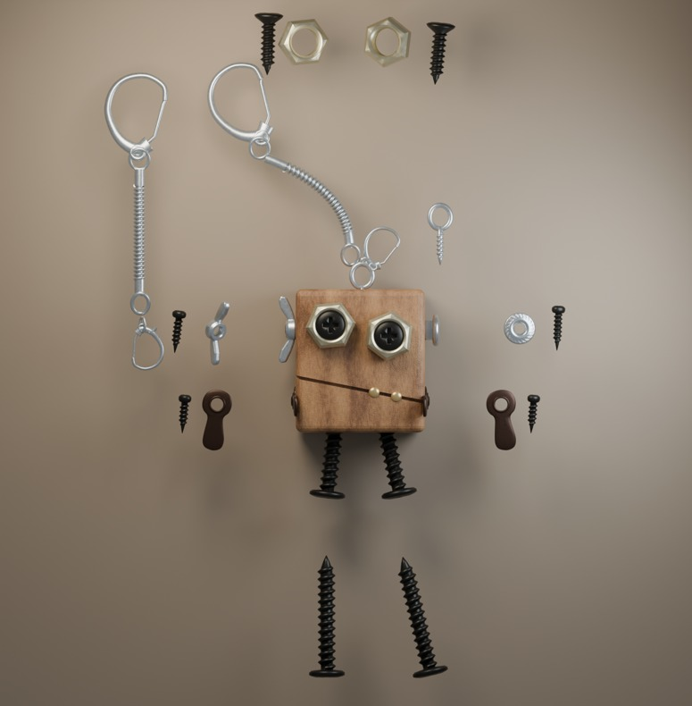

레트로봇 조립 안내
몸통의 얼굴이 나를 향하게 놓고 시작하세요. 오른쪽과 왼쪽은 보는 사람 기준입니다.

01 / 06
오른쪽 눈
육각 테두리를 먼저 놓고, 검은 짧은 나사를 체결하세요.
영상을 불러오지 못했어요. 영상 파일 열기
부품 모양 비교하기
짧은 검은 나사는 눈과 귀에, 긴 검은 나사는 다리에 쓰입니다. 왼쪽 귀는 날개형이고 오른쪽 귀는 둥근 원반형입니다.
